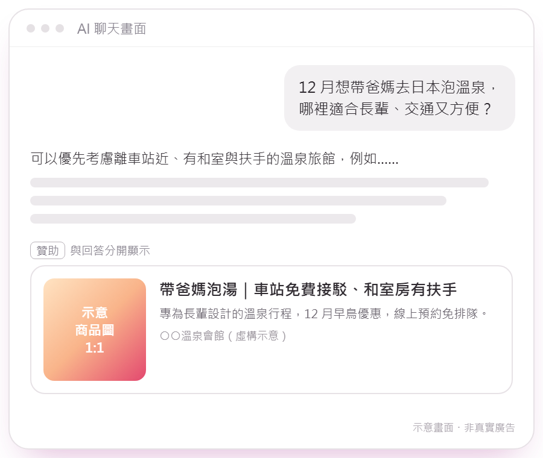

行為輪廓精準投放
不看按讚，看真實行為。依你指定的行為輪廓，把廣告送到目標族群常去的各類網站與平台。
- 性別、年齡、地區，加上看過什麼網站、去過什麼地方、買過什麼，都能成為鎖定條件
- 可以時間回推，也能把不要的人排除
- Google、Facebook、Instagram、YouTube、Dcard、LinkedIn、LINE、App 聯播網、簡訊、電視等
服務 / 精準廣告投放
ADS
兩種精準廣告，
把廣告送到你要的人面前
一種依「真實行為」撈出你指定的族群，讓廣告出現在他們常去的地方；一種在客人「正在問 AI、正在比較」的當下出現。不是二選一，我們先看你的客人在哪、怎麼做決定，再決定怎麼投。
先看精準度
用理想客人的輪廓條件，一個一個疊出你要的那群人。我們鎖定的是「族群輪廓」，不是某一個人；紅色虛線是反過來「排除」。
為什麼精準度是重點
廣告要看的第一件事，是它有沒有送到你指定的人。受眾準了，同一群人看到不同的說法，反應的差別才是真的，你才看得出你的差異化對他們有沒有感覺。也可以先用廣告找到精準的受眾，再拿來做測試。
用輪廓與真實行為，圈出你要的那群人，也排除不要的。
同一群指定的受眾，比較不同的說法，看哪一個有反應。
用數據確認：你的差異化，對你指定的客人有沒有感覺。
兩種精準廣告
差別在「怎麼找到人」和「廣告出現在哪」。先看這兩張卡，再往下看各自怎麼做。
不看按讚，看真實行為。依你指定的行為輪廓，把廣告送到目標族群常去的各類網站與平台。
在客人正在問 AI、做研究比較的當下，廣告出現在 ChatGPT 回答的下方，標示「贊助」。
一張表看差異
| A 行為輪廓精準投放 | B ChatGPT 廣告 | |
|---|---|---|
| 怎麼找到人 | 依你指定的輪廓分群：基本輪廓、網站、App、地點、消費 | 依對話情境配對：用一段情境提示描述客人在問什麼 |
| 廣告出現在哪 | 目標族群常去的各類網站與平台 | ChatGPT 回答下方的「贊助」卡片 |
| 客人當下的狀態 | 平常在看、在逛，被你指定的族群看見 | 正在問、正在比較，意圖更明確 |
| 能不能指定族群 | 可以，也能把不要的人排除 | 目前只能鎖國家與裝置，不能指定年齡、性別、興趣 |
| 誰看得到 | 依渠道與你指定的族群而定 | 成年的免費版與低價版 ChatGPT 用戶 |
| 適合 | 想讓特定族群認識你、看見你 | 購買前會先比較、先問 AI 的品類 |
| 計費 | 多數渠道看到不用錢，點了才付費 | 先以點擊計費小額測試 |
兩種可以搭配：A 讓指定族群認識你，B 在客人開始比較的時候接住他。
A｜行為輪廓精準投放
貼標多半來自按讚、留言、分享，輪廓非常粗略。按了小貓小狗照片的讚，不等於會買飼料。
不只看按讚，也看網站、App、地點與消費；要的族群撈進來，不要的族群排除掉。
我們鎖定的是「族群輪廓」，不是「某一個人」。
廣告出現在 Google、Facebook、Instagram、YouTube、Dcard、LinkedIn、LINE、App 聯播網、簡訊、電視等渠道。我們長期服務公會、協會與學會，在合作單位同意下，也有機會透過他們的會員通路協助推廣。
B｜ChatGPT 廣告 新通路
很多人做決定之前，會先把用途、條件和預算一次說給 AI 聽。ChatGPT 廣告就出現在這個時刻，回答的下方、標示「贊助」，與回答內容分開。

ChatGPT 廣告鎖的不是「他是誰」，是「他正在問什麼」。例如：
情境為示意；繁體中文的情境判定準不準，需要實際投放測試。
獨立的廣告卡片，不影響 ChatGPT 怎麼回答，也不會讓它在回答裡推薦你。
Plus、Pro、企業版、教育版與未滿 18 歲的帳戶看不到廣告。
廣告主只拿到彙總的成效數據，拿不到對話內容；我們鎖定的是情境，不是個人。
用一段短而具體的話，描述客人正在問什麼。它不是關鍵字，也不保證出現在某一句提問。
電商、3C、旅遊、家居、法律、房地產等，客人下決定之前會先問 AI、先做比較的產品與服務；而且你有對應的商品頁或服務頁。
多數醫療保健、政治、博弈、菸酒、成人類不能投。適不適合，我們會先幫你判斷，不適合就直接告訴你。
裝好追蹤、設定情境提示、準備幾個不同角度的素材。
保留表現好的組合，替換素材與文案。
和其他渠道比成效，再決定要不要加碼。
台灣現在已經可以投放 ChatGPT 廣告。不過繁體中文的情境判定準不準，要實際投放才知道，所以我們建議先小額測試、看數據再決定要不要加碼。定位是補充渠道，不保證成效。
服務內容
我們能做到的，是讓你指定的族群、或正在比較的客人確實看得到你；看見之後會不會買，我們用數據分析與 A/B 測試，一起找出答案。
費用與時程依你的狀況說明，歡迎加 LINE 聊聊。